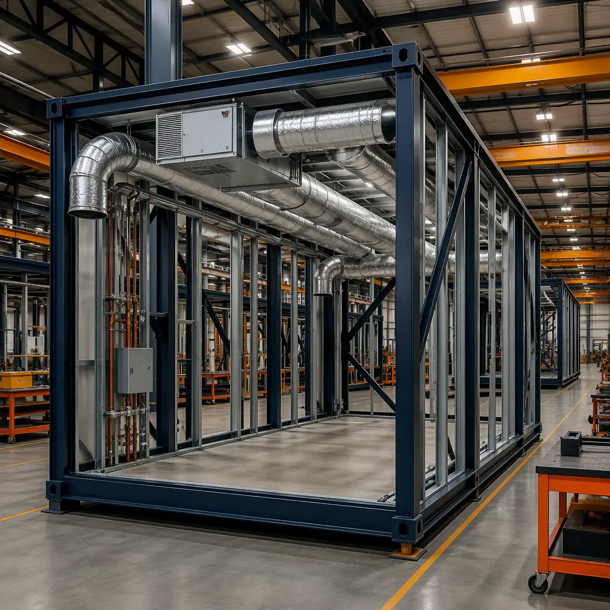
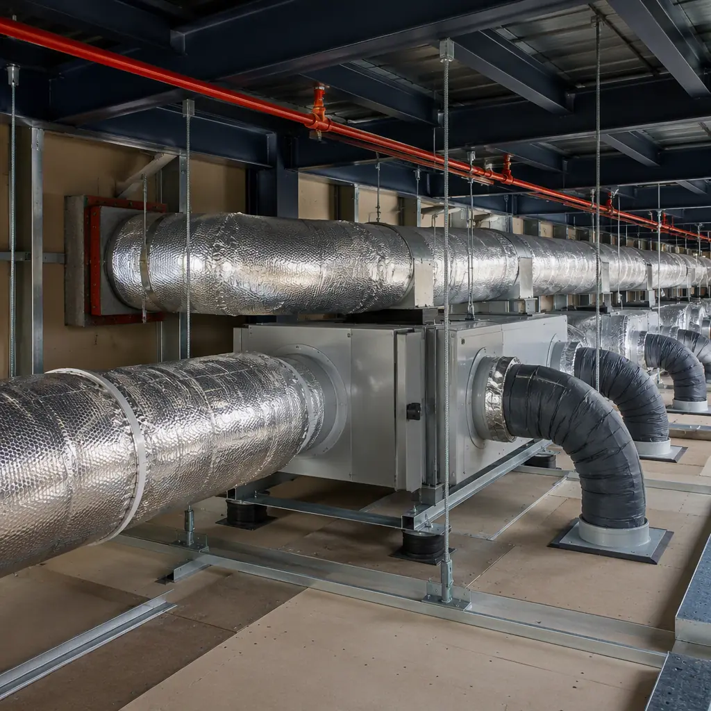
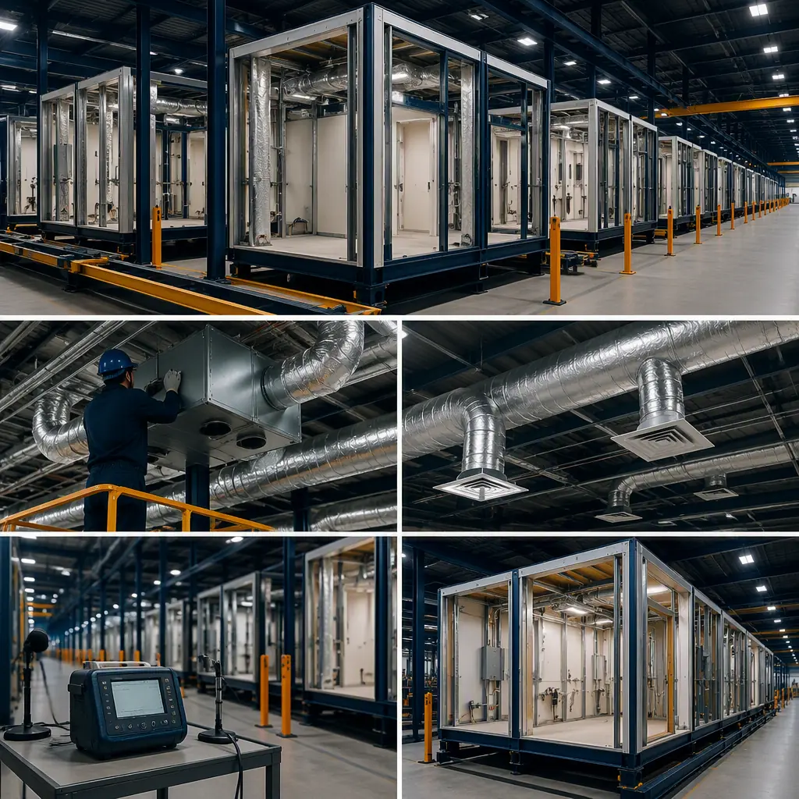

The average American spends approximately 90% of their time indoors, where pollutant concentrations can be two to five times higher than outdoor levels — a finding the EPA has documented for over three decades. In commercial buildings, the HVAC system is simultaneously the largest energy consumer (typically 35–50% of total building energy use) and the primary determinant of indoor environmental quality. These two objectives — energy efficiency and indoor air quality — have historically been in tension: tighter buildings save energy but trap pollutants; increased ventilation improves air quality but raises energy costs. Modular construction resolves this tension through a combination of factory-installed HVAC systems, precision air sealing, and energy recovery ventilation that delivers ASHRAE 62.1-compliant outdoor air rates with minimal energy penalty. This article explains the HVAC design strategies, indoor air quality performance standards, and factory integration advantages that make modular buildings healthier places to live and work.

Why Factory-Installed HVAC Changes Everything
In conventional construction, the HVAC system is assembled on site by sheet metal workers, pipefitters, controls technicians, and test-and-balance contractors — often working in sequence, not collaboration, within a building that is simultaneously being enclosed, insulated, and finished by other trades. Ductwork is fabricated in the field or delivered in sections and assembled overhead. Refrigerant piping is brazed on a lift. Controls wiring is pulled through conduit that was installed by the electrical contractor two weeks earlier. The test-and-balance contractor arrives after everyone else has left and discovers that the airflow at 80% of the terminal units does not match the design values — but by then, the ceiling grid is installed, the walls are painted, and the owner's move-in date is three days away.
Modular construction inverts this sequence. The HVAC system — including main duct runs, terminal units, diffusers, refrigerant piping, condensate drains, controls wiring, and the air handling equipment itself — is installed in the factory, with the module at floor level, under a roof, with unrestricted access to every connection point. The ductwork is fabricated to the module's precise dimensions on a CNC plasma table, not cut to fit in the field. The refrigerant piping is brazed under factory quality control, pressure-tested with nitrogen, evacuated, and charged — all before the module leaves the production line. The test-and-balance is performed in the factory, where the results are documented and become part of the module's quality record. For a complete overview of how all three MEP trades are integrated in the factory, see our guide on modular MEP systems integration.
The site scope is reduced to connecting the module-to-module duct transitions, tying the refrigerant piping between modules into the central condenser or heat pump, and commissioning the whole-building controls. The difference in field labor hours is dramatic: a modular building's HVAC field scope represents approximately 15–25% of the total HVAC installation hours, compared to 100% for conventional construction. The factory-installed portion is completed 40–60% faster per unit of HVAC capacity, because the work is performed on a production line with dedicated workstations, overhead hoists, and material handling systems that eliminate the productivity losses inherent in site-based installation — climbing ladders, waiting for material deliveries, working around other trades, and losing days to weather.

Energy Recovery Ventilation: The Key to IAQ Without Energy Penalty
ASHRAE Standard 62.1-2022 specifies minimum outdoor air ventilation rates based on occupancy type, floor area, and occupant density. For a typical office building, the required outdoor air rate is approximately 5 cubic feet per minute (CFM) per person plus 0.06 CFM per square foot — which, for a 30,000-square-foot office with 200 occupants, translates to roughly 2,800 CFM of outdoor air. In a conventionally constructed building, this outdoor air must be heated from outdoor temperature to indoor setpoint in winter and cooled and dehumidified in summer — a thermal load that can account for 20–35% of the building's total HVAC energy consumption.
An energy recovery ventilator (ERV) or heat recovery ventilator (HRV) solves this problem by transferring heat and moisture between the exhaust airstream and the incoming outdoor airstream, preconditioning the outdoor air before it reaches the heating or cooling coil. A well-designed ERV can recover 65–80% of the sensible energy and 50–65% of the latent energy from the exhaust air, reducing the outdoor air heating and cooling load by roughly 60–75%. In a modular building, the ERV is factory-installed — sized for the module's ventilation zone, ducted to the module's outdoor air intake and exhaust terminations, and balanced to within ±10% of design airflow before the module ships.
Modular buildings typically employ a decentralized ERV strategy: each module or group of two to three modules is served by a dedicated ERV, sized for that zone's occupancy and floor area. This approach has three advantages over the centralized ERV systems common in conventional construction. First, it eliminates the long outdoor air and exhaust duct runs that consume floor-to-floor height and introduce pressure losses that reduce ERV effectiveness. Second, it allows ventilation to be demand-controlled at the zone level — a CO2 sensor in the zone's return air duct modulates the ERV's outdoor air damper, delivering more ventilation when the zone is occupied and less when it is not. Third, it eliminates single points of failure: if one ERV requires maintenance, the rest of the building continues to receive full ventilation.
| IAQ Parameter | Modular Building (Measured) | Conventional Building (Typical) | Standard / Guideline |
|---|---|---|---|
| CO2 (occupied, ppm) | 550–800 | 800–1,500 | < 1,000 (ASHRAE 62.1 guideline) |
| PM2.5 (µg/m³) | 2–5 | 8–25 | < 12 (EPA annual standard) |
| TVOC (ppb) | 50–200 | 300–1,500 | < 500 (LEED v4.1 low-emitting) |
| Formaldehyde (ppb) | 5–20 | 20–100 | < 27 (CA OEHHA chronic REL) |
| Outdoor air rate (CFM/person) | 20–30 | 10–17 | ≥ 17 (ASHRAE 62.1 office) |
These IAQ performance levels are achieved through a combination of factory-installed ventilation systems, low-emitting materials specified at the module level, and the elimination of on-site moisture exposure during construction — a source of mold and microbial growth that affects many conventionally constructed buildings before occupancy. For the certification framework that validates these IAQ outcomes, see our article on modular WELL-certified and biophilic buildings.

Ductwork Design: Shorter Runs, Lower Static Pressure, Quieter Operation
Ductwork that is designed for a modular building is fundamentally different from ductwork designed for a conventional building. In a conventional building, the main supply and return ducts run the full length of the building — potentially 100 to 300 feet — with branch ducts tapping off every 15 to 25 feet to serve individual zones. These long duct runs consume substantial floor-to-floor height (typically 18–24 inches for the main trunk), introduce static pressure losses that increase fan energy consumption, and complicate the test-and-balance process because pressure conditions at the first terminal unit on the run bear little resemblance to conditions at the last.
In a modular building, each module is its own ventilation zone. The module's ductwork need only distribute air from the module's mechanical closet or ceiling plenum to the diffusers within that module — typically a maximum duct run of 30 to 50 feet, compared to 100 to 300 feet in conventional construction. The shorter runs reduce static pressure by 30–50%, which allows the selection of smaller, quieter fans operating at lower speeds. The module-to-module duct connections at the building's corridor or chase are simple transitions — a rectangular or round duct spool piece that bridges the 6–12 inch gap between adjacent modules — not complex distribution networks.
The acoustic implication is significant. Fan noise in ductwork is proportional to static pressure: a fan operating against 1.5 inches of external static pressure produces roughly 6–10 dB more noise than the same fan operating against 0.75 inches. In a hotel or apartment building — where guestroom or tenant noise is a primary satisfaction metric — the difference between a noisy HVAC system and a quiet one is often the difference between a 5-star review and a complaint. For the broader acoustics picture, see our article on modular building acoustics and soundproofing, which documents STC ratings of 55+ for modular wall and floor assemblies.
IAQ by Design: Low-Emitting Materials and Construction Moisture Control
Indoor air quality is not solely a function of the HVAC system. It is also a function of the materials that the HVAC system is conditioning — the paints, adhesives, sealants, flooring, composite wood products, and insulation that off-gas volatile organic compounds (VOCs) into the indoor air for months or years after construction is complete. In conventional construction, these materials are applied on site, where ventilation during installation is minimal, curing conditions are uncontrolled, and the sequencing of finishes means that high-VOC materials are sometimes enclosed behind low-VOC finishes before they have fully cured — trapping pollutants inside the building assembly where they off-gas into the occupied space over an extended period.
Modular construction specifies low-emitting materials at the module level, with indoor air quality as a design criterion rather than an afterthought. Paints and coatings are specified to meet LEED v4.1 low-emitting materials credit requirements (VOC content below 50 g/L for flat paints, below 150 g/L for non-flat). Adhesives and sealants meet SCAQMD Rule 1168 limits. Composite wood products are specified as no-added-formaldehyde (NAF) or ultra-low-emitting-formaldehyde (ULEF) per CARB Phase 2. Flooring is specified as FloorScore-certified for hard surfaces or Green Label Plus for carpet. Because these materials are applied in the factory — where ventilation is continuous, curing conditions are controlled, and the module is not occupied until weeks after the finishes are applied — the majority of off-gassing occurs before the module reaches the site, and the building's indoor air is measurably cleaner on day one of occupancy.
More fundamentally, modular construction eliminates the single largest source of indoor air quality problems in conventional construction: moisture during construction. A conventionally constructed building's wood framing, gypsum board, and insulation may be exposed to rain, snow, or high humidity for weeks before the building is enclosed. That moisture supports mold growth — often invisible, concealed behind finished surfaces — that releases spores and microbial VOCs into the indoor air for the life of the building. Modular modules are built indoors, in a factory where humidity is controlled and materials are stored in dry conditions. The module is weather-tight before it leaves the production line, and it remains weather-tight through transport and installation. There is no construction moisture to manage, because there was never any construction moisture introduced. For the sustainability implications of this approach, see our article on modular construction embodied carbon.